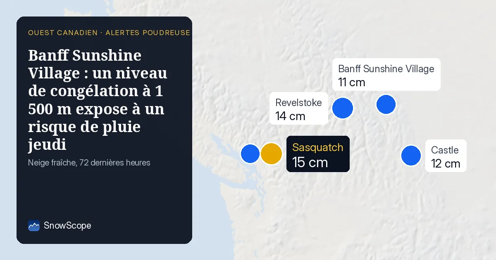
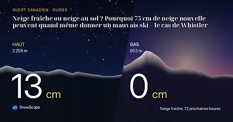

Banff Sunshine Village : un niveau de congélation à 1 500 m expose à un risque de pluie jeudi
De la neige fraîche est arrivée dans tout l'ouest du Canada au cours des trois derniers jours, Castle Mountain et Revelstoke ayant reçu 12 à 14 cm. Le hic : un niveau de congélation de 1 500 m poussera la pluie jusqu'aux sommets de Banff Sunshine Village jeudi, scellant la poudreuse nouvelle et liant le manteau.
Consultez les prévisions neige en temps réel pour Banff Sunshine Village sur l'application SnowScopeHauteurs de neige, alertes poudreuse et carte 3D, gratuitement.
Où la neige nouvelle est tombée
Une cellule orageuse s'est installée au cours des 72 dernières heures, apportant de la neige mesurable dans la région. Castle Mountain a reçu 12 cm de neige nouvelle, avec les chutes les plus importantes lundi et mardi. Revelstoke et Sasquatch ont tous deux vu 14 à 15 cm dans la même période. Grouse Mountain a reçu 10 cm. Même Banff Sunshine Village, la station la plus haute ici à 2 686 m, a reçu 11 cm en trois jours.
La neige est mince aux basses altitudes. À la base de Sasquatch (975 m), notre modèle indique seulement 2 cm au sol aujourd'hui. Grouse Mountain n'enregistre que 5 cm sur les pentes supérieures. C'est une neige de début de saison sur un sol pratiquement dénudé, donc la couverture est inégale et les rochers sont probablement près de la surface sur de nombreuses pentes.
| Station | Hauteur de neige | Neige fraîche, 72 h | Attendu, jours suivants | Sommet |
|---|---|---|---|---|
| Sasquatch | 23 cm | 15 cm | 0 cm | 1 316 m |
| Revelstoke | 44 cm | 14 cm | 0 cm | 2 224 m |
| Castle | 16 cm | 12 cm | 4 cm | 2 259 m |
| Banff Sunshine Village | 21 cm | 11 cm | 0 cm | 2 686 m |
| Grouse Mountain | 5 cm | 10 cm | 0 cm | 1 228 m |

Risque de pluie aux plus hauts sommets
Le problème critique cette semaine n'est pas la neige supplémentaire mais la hausse de la température de l'air. Jeudi 19 novembre, le niveau de congélation à Banff Sunshine Village grimera à 1 500 m. Le sommet des remontées se situe à 2 686 m, bien au-dessus de cette limite. Cela signifie que de la pluie tombera sur la neige fraîche au sommet.
La pluie sur la neige fraîche fait deux choses : elle empêche la poudreuse de rester légère et crée une croûte qui se lie au manteau. Cette croûte peut piéger l'eau ou devenir dure et verglaçante. Ce n'est pas un désastre pour le ski, mais cela termine la fenêtre de pure poudreuse. À Revelstoke, qui culmine à 2 224 m, la pluie tombera aussi plus près du sommet, bien que les pentes les plus hautes pourraient échapper à de la pluie pure en faveur de la neige mouillée.
Castle Mountain se distingue
Castle Mountain est différent. Son sommet se situe à 2 259 m, plus bas que les autres hauts pics. Plus important encore, 6 cm de neige nouvelle sont tombés là-bas hier (mercredi), ce qui est inhabituel après trois jours calmes. Le niveau de congélation là-bas jeudi descendra à 640 m, puis à 510 m vendredi, donc le risque de pluie est moins élevé. Castle bénéficie aussi d'une neige supplémentaire prévue : environ 4 cm dans les prochains jours, surtout jeudi et vendredi.
Si vous recherchez de la neige fraîche, Castle est le meilleur pari cette semaine. La neige nouvelle là-bas ne sera pas scellée par la pluie aussi tôt que sur les plus hauts sommets.
Ce que les chiffres nous disent
La couverture neigeuse dans l'ouest du Canada est passée de 278 460 km² il y a deux jours à 322 740 km² aujourd'hui. Ce gain de 44 000 km² est réel : la région est plus blanche. Mais les profondeurs absolues restent minces. À mi-pente (1 369 m) à Revelstoke, notre modèle indique 11 cm. À mi-niveau à Sasquatch (1 145 m), c'est seulement 6 cm. Ce sont des estimations pour de grandes surfaces, pas des mesures exactes, donc elles comportent de l'incertitude. Les années passées, à la mi-novembre, les pentes mi-niveau de Sasquatch contenaient habituellement 45 cm. Aujourd'hui nous voyons 5 cm là-bas. C'est 11 pour cent de la normale.
La neige tombée lundi a eu le plus fort impact. Mardi, le temps s'était asséché. Hier et aujourd'hui n'ont rien apporté de nouveau. La prévision jeudi à vendredi est sèche aussi, bien que la pluie de jeudi réinitialisera la surface.
Ce qu'il faut observer sur les montagnes
La limite de neige compte surtout en ce moment. À Revelstoke le 20 novembre, le niveau de congélation descendra à 160 m, donc pratiquement tout le terrain verra de la neige, pas de la pluie. À Castle, il tournera autour de 510 m. Mais à Banff Sunshine Village jeudi, la pluie est certaine au-dessus de 1 500 m. Si vous skiez là-bas ce jour-là, attendez-vous à de la neige mouillée en haut et de la pluie en bas.
La fenêtre de poudreuse sèche est très étroite cette semaine parce que le gel est élevé et la neige nouvelle est mince. Les conditions de début de saison signifient une brève lune de miel. Vendredi, la croûte se cristallisera dur, et la phase de poudreuse sera terminée.
Conseils aux skieurs
- Si vous voulez de la neige fraîche sans pluie, allez à Castle Mountain jeudi ou vendredi. Le niveau de congélation reste en dessous de 1 150 m les deux jours, donc la pluie n'atteindra pas la poudreuse nouvelle.
- À Banff Sunshine Village, skiez tôt jeudi avant 10 h, ou attendez vendredi quand le niveau de congélation descend en dessous de 1 100 m et la neige revient à toutes les altitudes.
- Évitez les basses altitudes jeudi. Les zones de base de toutes les stations verront de la pluie ou de la gadoue mouillée quand le niveau de congélation culmine.
- Consultez le bulletin officiel d'avalanche avant d'aller hors-piste. La neige de début de saison est mince et peut cacher des rochers ou s'accumuler mollement sur un sol dénudé.
- Les pentes supérieures de Revelstoke verront de la neige tomber jeudi, pas de la pluie, donc c'est skiable. La limite de neige se situe autour de 1 360 m là-bas.
À propos de ces chiffres
Les hauteurs de neige des stations sont la neige la plus épaisse sur le haut du domaine, d'après le modèle de neige SnowScope (environ 1 km, calcul du 18 novembre) ; ce sont des estimations pour une zone, pas une mesure en un point. Les valeurs des stations de mesure sont mesurées à la date indiquée. Les prévisions peuvent changer. Consultez toujours le bulletin d'avalanche officiel avant le hors-piste.
Bulletins d'avalanche officiels: Avalanche Canada
Citer ce bulletin
Pour la recherche, l'enseignement ou la presse : chiffres et graphiques réutilisables librement sous CC BY 4.0 avec cette citation.
SnowScope (2026), Banff Sunshine Village : un niveau de congélation à 1 500 m expose à un risque de pluie jeudi, https://snowscope.app/blog/fr/2026/11/western-canada-banff-sunshine-village-fresh-snow-powder-alert-18-november-2026.html, consulté le 2026-11-18
SnowScope (Atlas Labs). (2026, November 18). Banff Sunshine Village : un niveau de congélation à 1 500 m expose à un risque de pluie jeudi. SnowScope snow reports. https://snowscope.app/blog/fr/2026/11/western-canada-banff-sunshine-village-fresh-snow-powder-alert-18-november-2026.html
BibTeX
@misc{snowscope2026westerncanadabanffsunshi,
author = {{SnowScope (Atlas Labs)}},
title = {Banff Sunshine Village : un niveau de congélation à 1 500 m expose à un risque de pluie jeudi},
year = {2026},
month = nov,
howpublished = {\url{https://snowscope.app/blog/fr/2026/11/western-canada-banff-sunshine-village-fresh-snow-powder-alert-18-november-2026.html}},
note = {Published 2026-11-18 16:53 UTC; accessed 2026-11-18}
}· CC BY 4.0 · Méthodes, données et outils →
Suivre Banff Sunshine Village
Gratuit : un message quand la neige arrive, et la météo chaque matin.
Autres bulletins neige

Skier à Lake Louise en début de saison : pourquoi la station démarre tôt, à quoi ressemble d'habitude la neige de novembre et décembre sur 46 hivers passés, et comment skier une neige encore mince.

Whistler Blackcomb a reçu 75 cm de neige nouvelle au sommet en une semaine, puis une tempête douce avec 124 mm d'eau. Un guide simple sur la sous-couche, la neige fraîche, la pluie et la croûte.